Reporting - TP1
Vous trouverez le logiciel Tableau Public dans la liste des programmes, dans la partie Outils Math et Stat. Vous devriez avoir l’écran suivant.
Ecran d’ouverture de Tableau Public
Importation des données
Une fois le logiciel Tableau Public ouvert, vous devez vous connecter à des données pour commencer à travailler (ou ouvrir un projet précédemment créé). Nous allons utiliser ici les résultats de l’enquête national effectuée 2,5 ans après l’obtention du DUT auprès des étudiants diplômés en 2011 (cette enquête est faite tous les ans pour information). Nous n’avons à disposition que les étudiants de l’IUT Paris Descartes . Vous trouverez le fichier Excel ici.
Lorsque vous avez choisi votre fichier Excel, vous devriez voir apparaître l’écran suivant.
Ecran visualisation des données
Vérification des données
Une fois les données importées, on peut vérifier si les types associés sont les bons. Ici, il n’y a aucun problème (a priori).
Par contre, nous avons deux champs (Code postal résidence et Département résidence) qui peuvent avoir un rôle spécifique dans le logiciel. En effet, ce sont des indications géographiques et il est possible de leur définir un rôle géographique correspondant à leur définition (cf écrans suivants).
Cela permettra de créer des cartes géographiques avec ajout d’informations statistiques.
Code Postal
Modification du rôle pour le code postal
Département
Modification du rôle pour le département
Première feuille (ou Sheet)
La logique de Tableau est de créer d’abord les représentations (tableaux ou graphiques) que l’on désire dans des Worksheet (ou Feuille), puis de les assembler (avec du texte aussi) dans un Dashboard (ou Tableau de Bord) ou une Story (pas de traduction spécifique pour le moment).
On va d’abord créer une représentation de la distribution du diplôme de DUT dans les réponses. Voici les étapes à suivre pour créer une nouvelle feuille :
- Tout d’abord, vous devez cliquer sur Sheet 1 (ou aussi Go To Worksheet. Vous obtenez l’écran suivant :
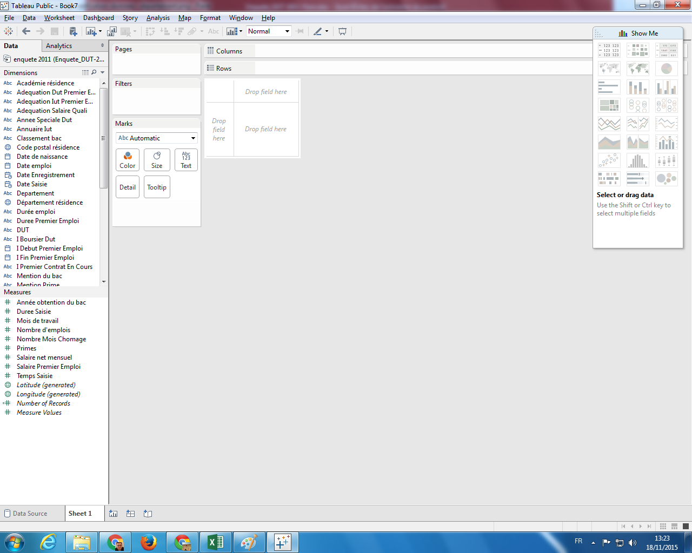 - Le logiciel Tableau fonctionne essentiellement sur le Drag&Drop (ou Glisser/Déplacer). Vous devez sélectionner
DUTdans la liste à gauche (dans les Dimensions) et le placer dans la cellule à côté de Rows :
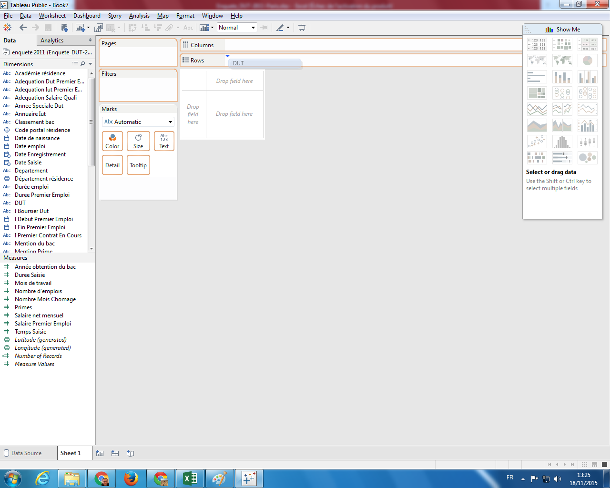 - Ensuite, dans la partie Measures à gauche, sélectionner # Number of Records, puis placer le dans le tableau (où il doit y avoir les valeurs
Abc)
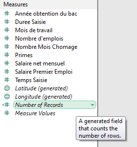 - Vous devez obtenir le résultat suivant : la répartition des répondants selon leur DUT d’origine
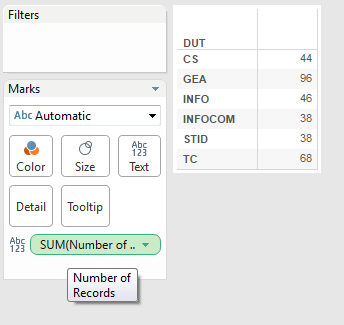 - Pour avoir un rendu plus visuel, on peut aussi placer ce nombre d’enregistrements (ou de lignes) sur l’icône Color (en le prenant dans le module Marks), et obtenir cette représentation (une légende des couleurs est apparue entre-temps) :
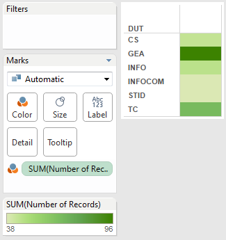 - Idem, on le place maintenant sur Size pour voir apparaître des carrés de tailles proportionnelles aux valeurs (idem, une légende a été créée) :
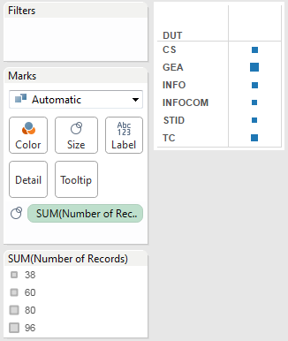 - En le plaçant sur Tooltip, rien ne s’affiche dans le tableau, sauf quand on place le curseur de la souris sur une des cases. On voit apparaître la valeur (i.e. le nombre d’enregistrements ayant cette modalité) :
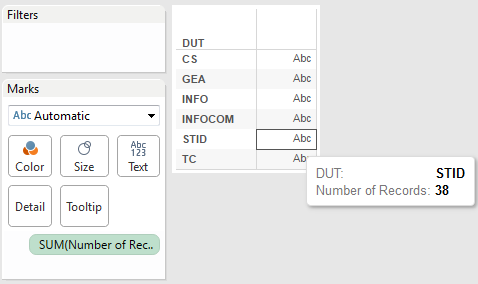 - En prenant plusieurs fois la mesure # Number of Records de la partie Measures à gauche, il est possible de combiner les représentations, et on obtient ceci :
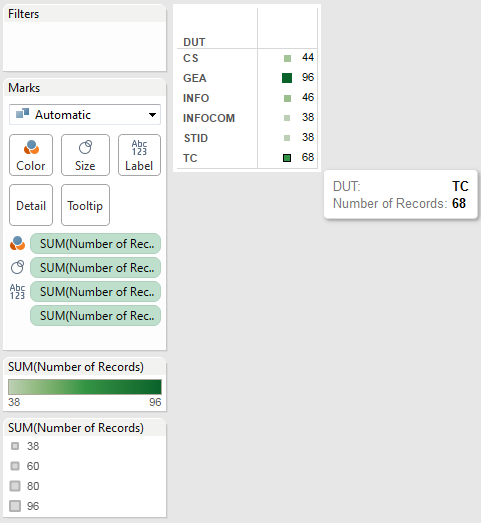 - On peut aussi changer la façon de représenter les valeurs dans le tableau, en choississant par exemple Bar dans le module Marks :
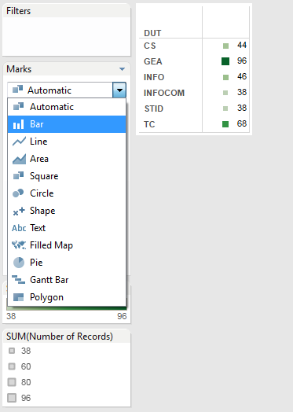 - Le résultat final de toutes ces manipulations devraient aboutir à cette représentation finale :
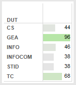
Il est possible de modifier le nom de la feuille (par défaut Sheet1) en double-cliquant sur son nom en bas du logiciel (un peu comme dans Excel par exemple). Appeler cette feuille Répartition DUT.
Deuxième feuille
Nous allons maintenant nous intéresser à la répartition du sexe dans nos réponses, en suivant les instructions suivantes :
- Créer donc une nouvelle feuille. Pour créer une deuxième feuille, vous devez aller dans le menu Worksheet puis New Worksheet.
- Glisser la colonne Sexe dans Rows (ou sur le tableau vide).
- Glisser # Number of Records dans Text ou dans le tableau vide aussi. Vous devriez avoir un tableau de répartition du sexe dans les répondants.
- Dans le module Show Me (à droite de votre écran normalement), il est possible de choisir la représentation et donc de changer le type de graphique. Cliquer sur le diagramme circulaire :
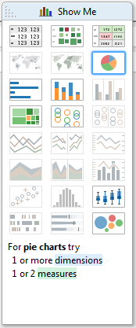 - Il est possible de spécifier les couleurs pour chaque modalité. Pour cela, cliquer sur la petite flèche à droite de Sexe dans la légende, puis Edit Colors. On peut soit directement changer la couleur (en en sélectionnant une), soit changer la palette de couleurs de base.
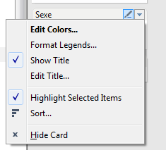 - Prenez la colonne Sexe dans Dimensions et placer la sur Label pour voir apparaître les modalités.
- Enfin, renommez la feuille en Répartition Sexe.
Troisième feuille
On veut maintenant connaître le montant du salaire mensuel des répondants (colonne Salaire Net Mensuel), en fonction de leur diplôme, en réalisant les opérations suivantes :
- Créer une nouvelle feuille.
- Glisser DUT sur Rows.
- Glisser Salaire Net Mensuel (dans Measures) sur Size et changeant en diagramme en barre en changeant dans Marks pour mettre Bar (au lieu de Automatic).
- Vous remarquerez que, par défaut, l’agrégat fait est une somme (SUM). On peut changer ceci en cliquant sur la petite flèche sur l’agrégat, puis sur Measure (Sum), puis Average ou Median (ou autre) en fonction de ce qu’on veut avoir (ici, on va prendre la médiane).
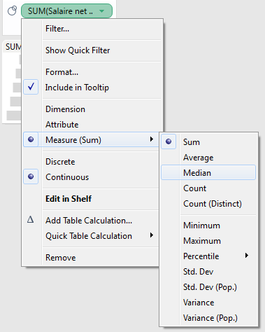 - Renommer la feuille en Salaire par DUT
Quatrième feuille
On désire maintenant connaître l’origine géographique des répondants, et particulièrement leur département de résidence (colonne Département résidence), avec les opérations suivantes :
- Créer une nouvelle feuille.
- Double-cliquer sur Département résidence dans Dimensions. Ceci se fait automatiquement car, dans l’importation des données, nous avons bien spécifier que cette variable avait un rôle géographique (et plus spécifiquement un nom de département français). On voit apparaître une carte avec des points au centre de chaque région.
- Dans Show Me, on choisit la carte avec couleur (cf image suivante) :
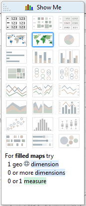 - On a maintenant une carte avec la même couleur pour chaque département dont au moins un répondant vient. Pour spécifier la couleur en fonction d’une variable, vous pouvez glisser # Number of Records sur Color.
- On peut agrémenter la carte en ajoutant Salaire Net Mensuel (en indiquant la médiane) et # Number of Records sur Tooltip pour voir ces informations lorsque on cliquera sur un département.
- Renommer cette feuille en Origine Etudiants.
Premier tableau de bord (ou Dashboard)
L’idée d’un tableau de bord (ou dashboard en anglais) est de regrouper plusieurs représentations concernant un sujet sur une même page, afin de synthétiser les résultats. Nous allons ici faire un tableau de bord sur l’origine des étudiants :
- Aller dans le menu Dashboard puis New Dashboard.
- Renommer le en Reporting 1
- Glisser Text en haut (écrivez
"Origine des étudiants", et, en sélectionnant le texte, choississez la police d’écriture Calibri, une taille de 18, un style en gras, et un alignement centré). - Ensuite, pour assembler les éléments (Sheets ou autre : texte, image, page web, …), il faut jouer sur les répartitions disponibles (Horizontal ou Vertical) et en bougeant les éléments.
- En intégrant les feuilles Répartition DUT, Répartition Sexe et Origine Etudiants, et en jouant sur la position et la taille des éléments et des légendes, vous pouvez obtenir un tableau de bord comme celui-ci :
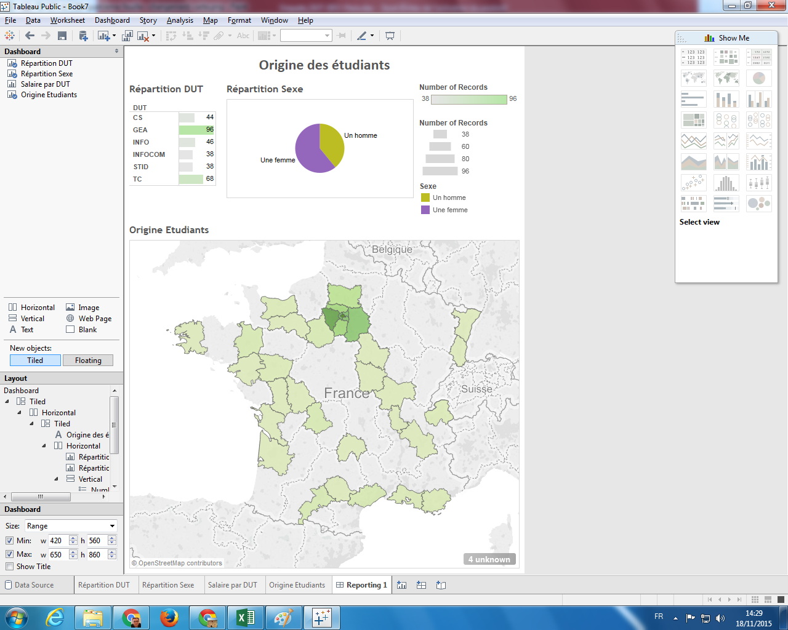
Sauvegarde de votre travail
Pour sauvegarder votre travail, vous devez avoir un compte (cf présentation).
Une fois connecté, vous devez donner un nom à votre travail (par exemple Reporting - TP1). Il sera sauvegardé sur votre compte hébergé par Tableau Public.
Ceci a pour effet que vous pourrez ouvrir votre travail sur n’importe quel autre ordinateur en pouvant le reprendre la où vous en êtes. Vous pourrez aussi partager votre tableau de bord via un lien disponible en bas de la fenêtre de votre navigateur qui vient de s’ouvrir. On peut le partager via un lien ou en l’intégrant dans une page web :

A FAIRE
Vous devez réaliser un tableau de bord sur le devenir des étudiants intégrant les éléments suivants en général et en fonction du DUT obtenu :
- Salaire Net Mensuel médian
- Type d’emploi (
nullindique nue valeur manquante - en faisant un clic-droit sur cette modalité, il est possible de l’exclure) - Travail
- Parcours Libellé (on peut faire un tri manuel des modalités dans la partie des propriétés)
Voici une proposition de résultat :